Univariate Distributions¶
Univariate distributions are the distributions whose samples are scalars (e.g. integers or real values).
Common Interface¶
A series of methods are implemented for each univariate distribution, which provide useful functionalities such as moment computation, pdf evaluation, and sampling (i.e. random number generation).
Computation of statistics¶
- mean(d)¶
Return the expectation of distribution d.
- var(d)¶
Return the variance of distribution d.
- std(d)¶
Return the standard deviation of distribution d, i.e. sqrt(var(d)).
- median(d)¶
Return the median value of distribution d.
- modes(d)¶
Return an array of all modes of d.
- mode(d)¶
Return the mode of distribution d. If d has multiple modes, it returns the first one, i.e. modes(d)[1].
- skewness(d)¶
Return the skewness of distribution d.
- kurtosis(d)¶
Return the excess kurtosis of distribution d.
- entropy(d)¶
Return the entropy value of distribution d.
- mgf(d, t)¶
Evaluate the moment generating function.
- cf(d, t)¶
Evaluate the characteristic function.
Probability Evaluation¶
- insupport(d, x)¶
When x is a scalar, it returns whether x is within the support of d. When x is an array, it returns whether every element in x is within the support of d.
- pdf(d, x)¶
The pdf value(s) evaluated at x.
- logpdf(d, x)¶
The logarithm of the pdf value(s) evaluated at x, i.e. log(pdf(x)).
Node: The internal implementation may directly evaluate logpdf instead of first computing pdf and then taking the logarithm, for better numerical stability or efficiency.
- cdf(d, x)¶
The cumulative distribution function evaluated at x.
- logcdf(d, x)¶
The logarithm of the cumulative function value(s) evaluated at x, i.e. log(cdf(x)).
- ccdf(d, x)¶
The complementary cumulative function evaluated at x, i.e. 1 - cdf(d, x).
- logccdf(d, x)¶
The logarithm of the complementary cumulative function values evaluated at x, i.e. log(ccdf(x)).
- quantile(d, q)¶
The quantile value. Let x = quantile(d, q), then cdf(d, x) = q.
- cquantile(d, q)¶
The complementary quantile value, i.e. quantile(d, 1-q).
- invlogcdf(d, lp)¶
The inverse function of logcdf.
- invlogccdf(d, lp)¶
The inverse function of logccdf.
Vectorized evaluation¶
Vectorized computation and inplace vectorized computation are supported for the following functions:
- logpdf
- cdf
- logcdf
- ccdf
- logccdf
- quantile
- cquantile
- invlogcdf
- invlogccdf
For example, when x is an array, then r = pdf(d, x) returns an array r of the same size, such that r[i] = pdf(d, x[i]). One can also use pdf! to write results to pre-allocated storage, as pdf!(r, d, x).
Sampling (Random number generation)¶
- rand(d)¶
Draw a sample from d
- rand(d, n)
Return a vector comprised of n independent samples from d
- rand(d, dims)
Return an array of size dims that is filled with independent samples from d.
- rand!(d, arr)
Fills a pre-allocated array arr with independent samples from d.
Distributions provides a large collection of univariate distributions, as listed below.
Discrete Distributions¶
All discrete univariate distribution types are subtypes of DiscreteUnivariateDistribution. Each sample from a discrete univariate distribution is an integer (of type Int).
Bernoulli Distribution¶
A Bernoulli distribution is parameterized by a success rate p, which takes value 1 with probability p and 0 with probability 1-p.
Bernoulli() # Bernoulli distribution with p = 0.5
Bernoulli(p) # Bernoulli distribution with success rate p
Binomial Distribution¶
A Binomial distribution characterizes the number of successes in a sequence of independent trials. It has two parameters: n, the number of trials, and p, the success rate.
Binomial() # Binomial distribution with n = 1 and p = 0.5
Binomial(n) # Binomial distribution for n trials with success rate p = 0.5
Binomial(n, p) # Binomial distribution for n trials with success rate p
Categorical Distribution¶
A Categorical distribution is parameterized by a probability vector p. Particularly, p[k] is the probability of drawing k.
Categorical(p) # Categorical distribution with probability vector p
Here, p must be a real vector, of which all components are nonnegative and sum to one.
Note: The input vector p is directly used as a field of the constructed distribution, without being copied.
Discrete Uniform Distribution¶
A Discrete uniform distribution is a uniform distribution over a consecutive sequence of integers.
DiscreteUniform(a, b) # a uniform distribution over {a, a+1, ..., b}
Geometric Distribution¶
A Geometric distribution characterizes the number of failures before the first success in a sequence of independent Bernoulli trials.
Geometric() # Geometric distribution with success rate 0.5
Geometric(p) # Geometric distribution with success rate p
Hypergeometric Distribution¶
A Hypergeometric distribution describes the number of successes in n draws without replacement from a finite population containing s successes and f failures.
Hypergeometric(s, f, n) # Hypergeometric distribution for a population with
# s successes and f failures, and a sequence of n trials.
Negative Binomial Distribution¶
A Negative binomial distribution describes the number of failures before the r-th success in a sequence of independent trials. It is parameterized by r, the number of successes, and p, the success rate.
NegativeBinomial() # Negative binomial distribution with r = 1 and p = 0.5
NegativeBinomial(r, p) # Negative binomial distribution with r successes and success rate p
Poisson Distribution¶
A Poisson distribution descibes the number of independent events occurring within a unit time interval, given the average rate of occurrence.
Poisson() # Poisson distribution with rate parameter 1
Poisson(lambda) # Poisson distribution with rate parameter lambda
Skellam Distribution¶
A Skellam distribution describes the difference between two independent Poisson variables.
Skellam(mu1, mu2) # Skellam distribution for the difference between two Poisson variables,
# respectively with expected values mu1 and mu2.
Continuous Distributions¶
All discrete univariate distribution types are subtypes of ContinuousUnivariateDistribution. Each sample from a discrete univariate distribution is a real-valued scalar (of type Float64).
Arcsine Distribution¶
The probability density function of an Arcsine distribution is:
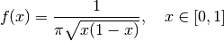
Arcsine() # Arcsine distribution
Beta Distribution¶
The probability density function of a Beta distribution with shape parameters α and β is:
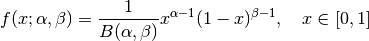
Beta(a, b) # Beta distribution with shape parameters a and b
Beta Prime Distribution¶
The probability density function of a Beta prime distribution with shape parameters α and β is:
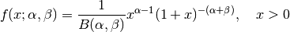
BetaPrime(a, b) # Beta prime distribution with shape parameters a and b
Cauchy Distribution¶
The probability density function of a Cauchy distribution with location μ and scale θ is:
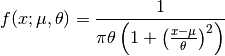
Cauchy() # Standard Cauchy distribution (location = 0.0, scale = 1.0)
Cauchy(u) # Cauchy distribution with location u and unit scale
Cauchy(u, s) # Cauchy distribution with location u and scale s
Chi Distribution¶
The Chi distribution with k degrees of freedom is the distribution of the square root of the sum of squares of k independent variables that are normally distributed. The probability density function is:
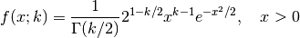
Chi(k) # Chi distribution with k degrees of freedom
Chi-square Distribution¶
The Chi-square distribution with k degrees of freedom is the distribution of the sume of sqaures of k independent variables that are normally distributed. The probability density function is:
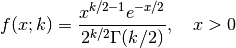
Chisq(k) # Chi-squared distribution with k degrees of freedom
Erlang Distribution¶
The probability density function of an Erlang distribution with shape parameter k and scale θ is
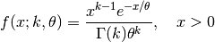
Erlang() # Erlang distribution with unit shape and unit scale
Erlang(k) # Erlang distribution with shape parameter k and unit scale
Erlang(k, s) # Erlang distribution with shape parameter k and scale s
Note: The Erlang distribution is a special case of the Gamma distribution with integer shape parameter.
Exponential Distribution¶
The probability density function of an Exponential distribution with scale θ is
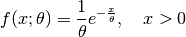
Exponential() # Exponential distribution with unit scale
Exponential(s) # Exponential distribution with scale s
F Distribution¶
The probability density function of an F-distribution with parameters d1 and d2 is
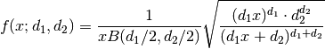
FDist(d1, d2) # F-Distribution with parameters d1 and d2
Gamma Distribution¶
The probability density function of a Gamma distribution with shape parameter α and scale θ is
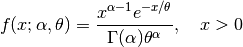
Gamma() # Gamma distribution with unit shape and unit scale
Gamma(a) # Gamma distribution with shape a and unit scale
Gamma(a, s) # Gamma distribution with shape a and scale s
Gumbel Distribution¶
The probability density function of a Gumbel distribution with location μ and scale θ is
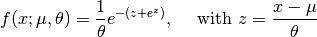
Gumbel() # Gumbel distribution with zero location and unit scale
Gumbel(mu, s) # Gumbel distribution with location mu and scale s
Inverse Gamma Distribution¶
The probability density function of an inverse Gamma distribution with shape parameter α and scale θ is
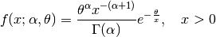
InverseGamma(a, s) # Inverted Gamma distribution with shape a and scale s
Laplace Distribution¶
The probability density function of a Laplace distribution with location μ and scale θ is

Laplace() # Laplace distribution with zero location and unit scale
Laplace(u) # Laplace distribution with location u and unit scale
Laplace(u, s) # Laplace distribution with location u ans scale s
Lévy Distribution¶
The probability density function os a Lévy distribution with location μ and scale θ is
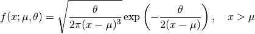
Levy() # Levy distribution with zero location and unit scale
Levy(u) # Levy distribution with location u and unit scale
Levy(u, s) # Levy distribution with location u ans scale s
Logistic Distribution¶
The probability density function of a Logistic distribution with location μ and scale θ is
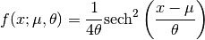
Logistic() # Logistic distribution with zero location and unit scale
Logistic(u) # Logistic distribution with location u and unit scale
Logistic(u, s) # Logistic distribution with location u ans scale s
Log-normal Distribution¶
Let Z be a random variable of standard normal distribution, then the distribution of exp(μ + σZ) is a log-normal distribution. The probability density function is
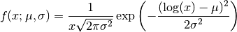
LogNormal() # Log-normal distribution with zero log-mean and unit scale
LogNormal(mu) # Log-normal distribution with log-mean mu and unit scale
LogNormal(mu, sig) # Log-normal distribution with log-mean mu and scale sig
Normal Distribution¶
The probability density distribution of a Normal distribution with mean μ and standard deviation σ is
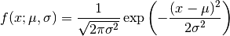
Normal() # standard Normal distribution with zero mean and unit variance
Normal(mu) # Normal distribution with mean mu and unit variance
Normal(mu, sig) # Normal distribution with mean mu and variance sig^2
Pareto Distribution¶
The probability density function of a Pareto distribution with scale θ and shape α is
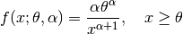
Pareto() # Pareto distribution with unit scale and unit shape
Pareto(s) # Pareto distribution with scale s and unit shape
Pareto(s, a) # Pareto distribution with scale s and shape a
Rayleigh Distribution¶
The probability density function of a Rayleigh distribution with scale σ is
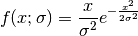
Rayleigh() # Rayleigh distribution with unit scale
Rayleigh(s) # Rayleigh distribution with scale s
(Student’s) T-Distribution¶
The probability density function of a t-distribution with d degrees of freedom is
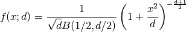
TDist(d) # t-distribution with d degrees of freedom
Uniform Distribution¶
The probability density function of a uniform distribution over an interval [a, b] is
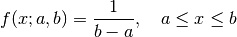
Uniform() # Uniform distribution over [0, 1]
Uniform(a, b) # Uniform distribution over [a, b]
Weibull Distribution¶
The probability density function of a Weibull distribution with shape k and scale θ is
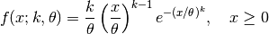
Weibull(k) # Weibull distribution with shape k and unit scale
Weibull(k, s) # Weibull distribution with shape k and scale s